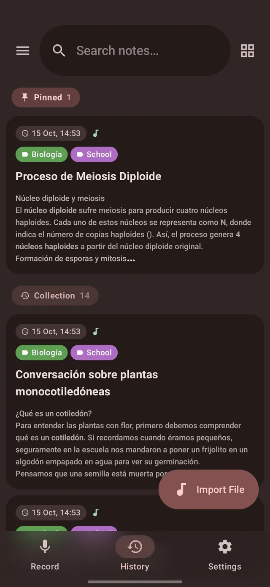
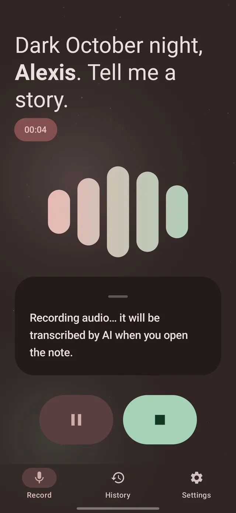
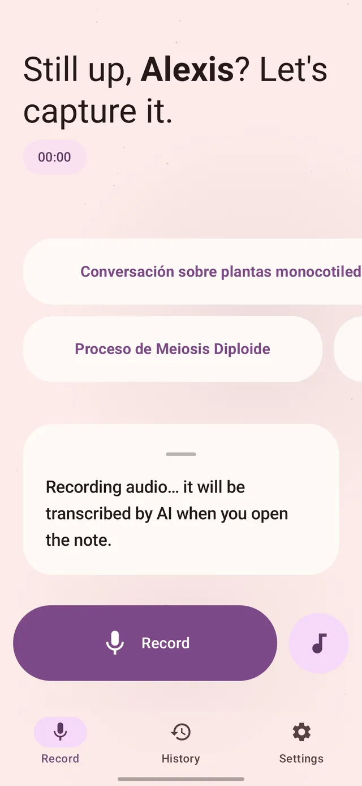
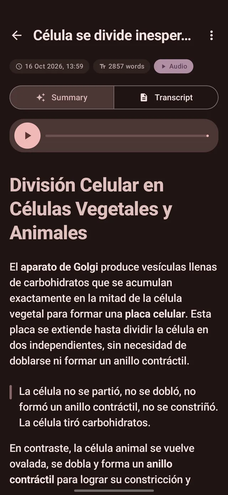
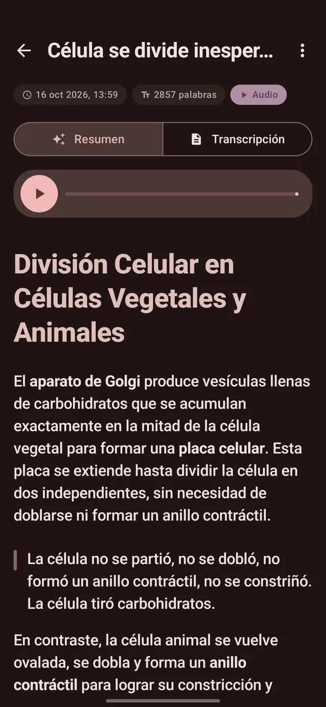
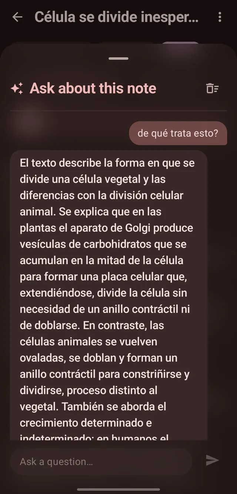
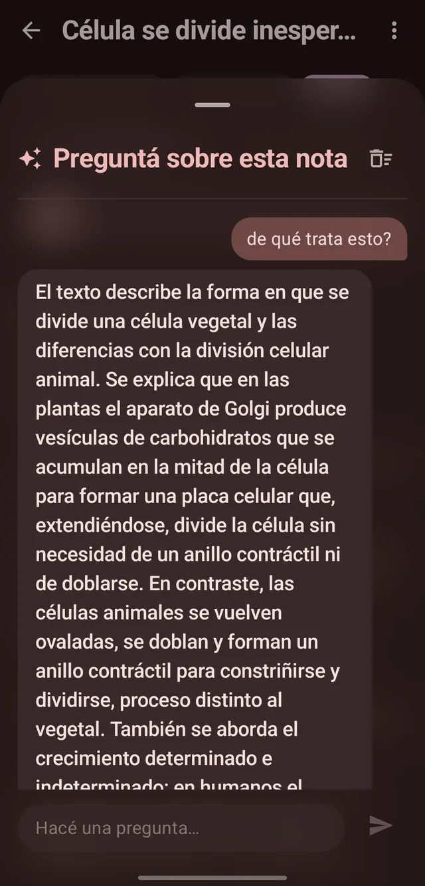
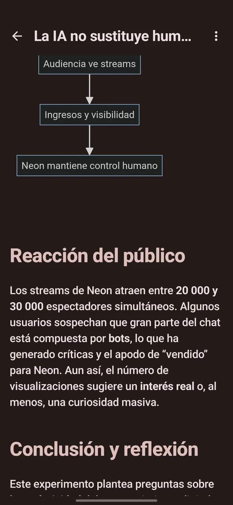
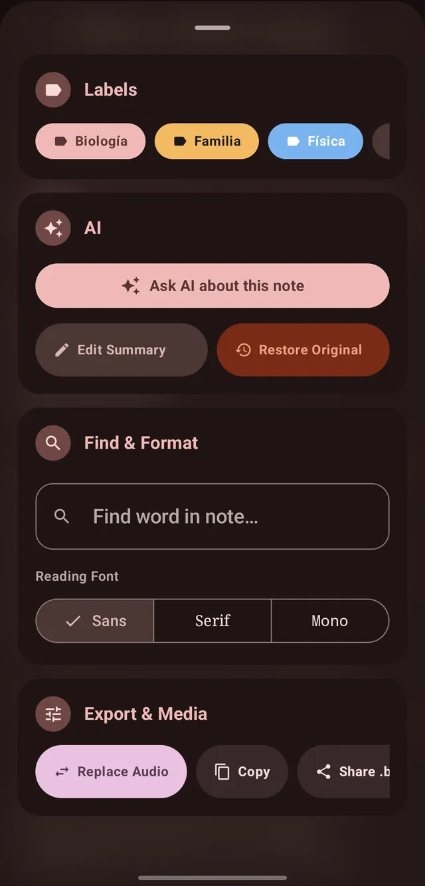
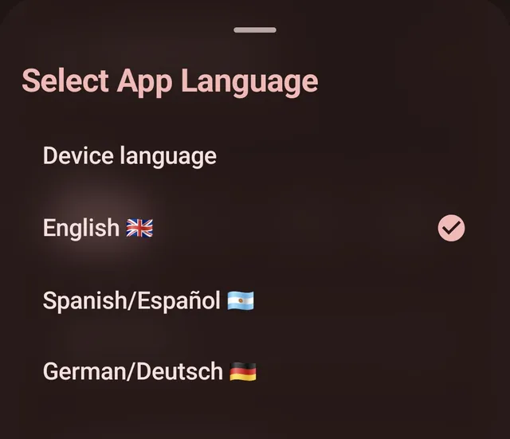

01
Record
Hit record and talk — or import an audio file you already have. It keeps recording in the background with the screen off.
Free · Open source · Android
Speak, We do the rest.
Record a meeting, a class or a passing idea. Obinot turns your voice into clean, structured Markdown notes you can search, edit and even chat with.
Latest release · Android 7.0 or newer





How it works
Hit record and talk — or import an audio file you already have. It keeps recording in the background with the screen off.
AI transcribes and structures it into a tidy Markdown note: headings, lists, tables, formulas and diagrams. Tidy it up, summarize it or analyze it.
Chat with any note. Ask follow-ups or have a passage explained. The conversation is saved with the note itself.


Features
A custom Markdown reader with tables, code, checklists you can tick, native math and Mermaid diagrams that render offline. Long-press any formula to copy its LaTeX.

Fast mode transcribes on-device; Accurate mode sends the full audio to AI. Live waveform, background recording and import for any audio you already have.
Use your own Gemini or Groq key, or let Dynamic mode pick the best one per task and stretch free quotas. Rotate several keys when one hits its limit.
Full-text search across every note, colored labels, pins and a trash you can recover from. Organized without effort.
Rewrite the summary in Markdown with a live preview, switch the reading font, find a word, replace the audio, copy or export — all from one sheet.

The app comes in English, Spanish and German, and the AI answers in 23 languages.

Notes, audio and settings live on your device. No account, no telemetry. AI requests go straight from your phone to your provider.
Full backups, single-note files and Markdown export. Binot 1.x backups import too.
Look & feel
Material 3 Expressive with springy buttons, a wavy audio progress bar and adaptive layouts for phones and tablets. Pick Auto, Light, Dark or AMOLED, and one of 7 Material You color palettes (tonal spot, vibrant, expressive, fruit salad, neutral, fidelity and monochrome).
Get started
Obinot is free. The AI part runs on a free key from the provider you choose — we'll walk you through it.
Download it from GitHub and open it. Android will ask you to allow installs from your browser once.
Pick Groq, Gemini or both. Creating a key takes about two minutes.
Talk. Open the note. That's it.
Latest release
Loading release notes…
Coming from Binot 1.x?
Obinot installs as a separate app, so both can live on your phone. Your data moves with you — backups work both ways.
.binotbak file